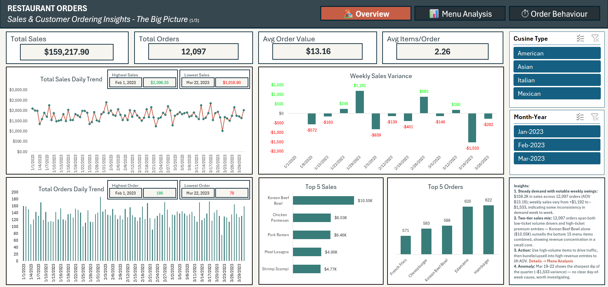
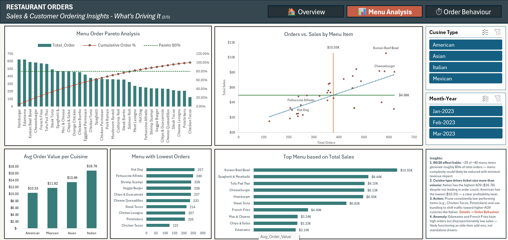
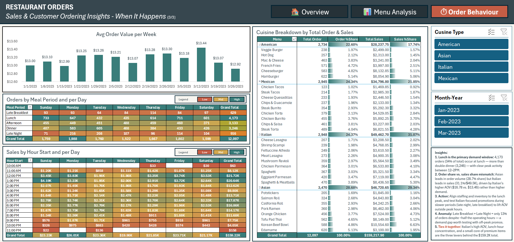
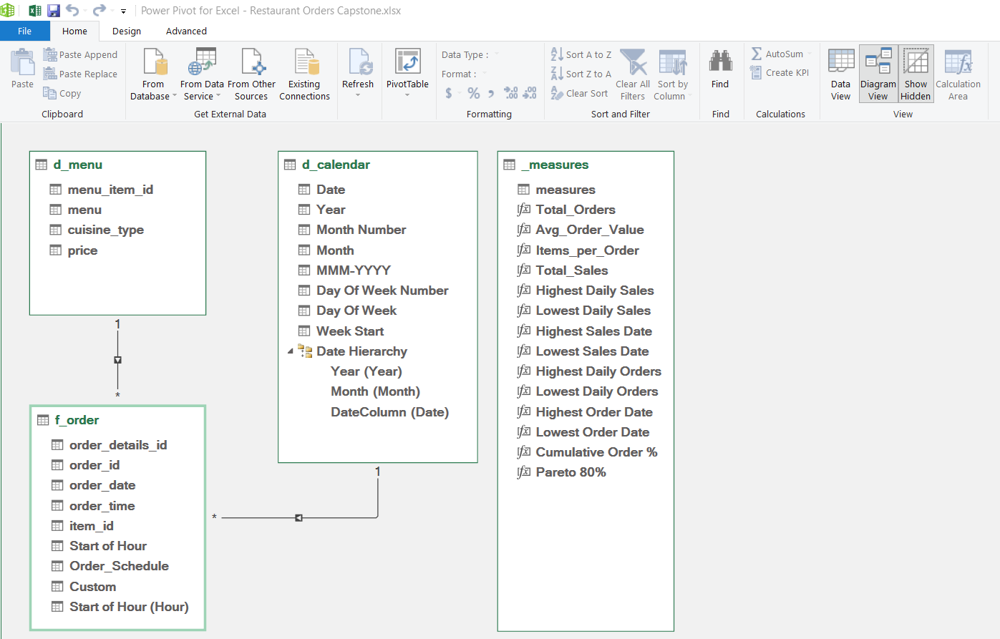
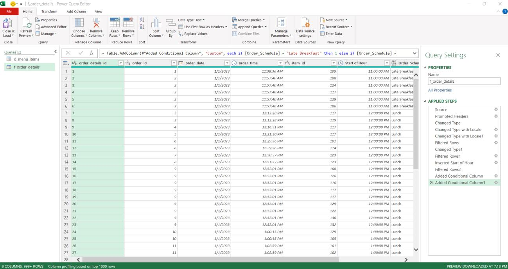

Executive Summary
A multi-cuisine restaurant needed a centralized way to understand sales performance across menu items, cuisine types, meal periods, and daily/weekly demand cycles. This project transforms raw order-level data into an interactive, three-tab Excel dashboard built on a proper Power Pivot star-schema data model — enabling management to quickly identify revenue trends, top- and under-performing menu items, cuisine profitability, and peak ordering windows.
My Role
Data Analyst / Business Intelligence Analyst — responsible for structuring the order-level data into a star-schema data model using Power Query and Power Pivot, writing the DAX measures that power the dashboard, designing the three-tab dashboard layout, identifying key trends and anomalies, and translating findings into actionable business recommendations.
Video Walkthrough
Dashboard Preview
The dashboard follows a narrative, three-tab structure — mirroring the actual navigation built into the Excel file itself.



Business Context
Order-level data existed, but it wasn't organized into a format management could use to make fast, confident decisions. The goal of this project was to turn that raw order data into an interactive Excel dashboard that surfaces revenue trends, top- and under-performing menu items, cuisine profitability, and peak ordering windows at a glance.
Project Objectives
Develop an interactive, three-tab sales dashboard that answers key operational and commercial questions and supports data-driven decisions around:
- Revenue and order volume trends
- Menu item performance (volume vs. revenue)
- Cuisine-type profitability
- Meal-period and hourly demand patterns
- Menu optimization opportunities
- Staffing and inventory alignment
Business Questions
The dashboard was designed around practical questions a restaurant operations or commercial manager would typically ask.
1. Is sales performance stable, or is it fluctuating in ways that need attention?
Daily and weekly trends were analyzed to identify the overall demand pattern and flag any unusual dips or spikes.
2. Which menu items actually drive revenue, versus which simply drive order volume?
Total orders and total sales were compared at the item level to separate high-volume/low-ticket items from high-ticket revenue drivers.
3. Which cuisine type delivers the strongest average order value?
Average order value was compared across American, Mexican, Asian, and Italian cuisines to identify where ticket size — not just order count — is highest.
4. When do customers order the most?
Orders and sales were broken down by meal period and by hour of day to identify peak demand windows and staffing implications.
5. Where is the menu underperforming, and where can it be optimized?
A Pareto (80/20) analysis was used to identify which items are essential to keep and which are candidates for pruning or repositioning.
6. Which cuisine and menu combination should be prioritized for growth?
Order-share and sales-share were compared across cuisines to identify where volume and revenue leadership diverge, and where the biggest growth opportunity sits.
Dataset & Tools Overview
| Category | Details |
|---|---|
| Industry | Food & Beverage / Restaurant Operations |
| Primary Tool | Microsoft Excel |
| Data Preparation | Power Query |
| Data Model | Power Pivot (star schema) |
| Calculations | DAX Measures |
| Scope | Jan–Mar 2023, 12,097 order-line records |
Data Modeling: Power Query & Power Pivot
Beyond dashboard visuals, the project was built on a proper relational data model rather than a single flat table — reflecting standard business intelligence practice.
Power Pivot Data Model
A star-schema data model was built in Power Pivot, connecting one central fact table (f_order) to two supporting dimension tables (d_menu and d_calendar), with a dedicated _measures table holding all DAX calculations — including Total_Orders, Avg_Order_Value, Total_Sales, Cumulative Order %, and Pareto 80%.

Power Query (ETL / Data Preparation)
Raw order-level data was cleaned and shaped in Power Query before being loaded into the data model — promoting headers, correcting data types, filtering out invalid rows, extracting Start of Hour from each order's timestamp, and building a conditional column to bucket each order into a meal period (Late Breakfast, Lunch, Afternoon, Dinner, or Late Night).

Key Insights
1. Revenue is steady overall, but weekly volatility needs monitoring
Total sales reached $159,217.90 across 12,097 orders (AOV $13.16). Daily sales ranged from a high of $2,396.35 (Feb 1, 2023) to a low of $1,016.90 (Mar 22, 2023), and weekly sales variance swung from +$1,192 to –$1,533 across the quarter. The Mar 19–22 period shows the sharpest dip of the quarter, with no clear day-of-week pattern to explain it.
2. Order volume leaders and revenue leaders are two different groups of items
The top 5 items by order count (Hamburger, Edamame, Korean Beef Bowl, Cheeseburger, French Fries) are largely low-to-mid ticket items, while the top 5 items by revenue (Korean Beef Bowl $10.55K, Chicken Parmesan $6.53K, Pork Ramen $6.46K, Meat Lasagna $4.90K, Shrimp Scampi $4.77K) are premium entrées. Korean Beef Bowl alone outsells the bottom 15 menu items combined.
3. The menu follows a classic 80/20 (Pareto) pattern
Roughly 20 of the approximately 40 menu items generate close to 80% of total order volume, with a long tail of items contributing disproportionately little.
4. Cuisine type drives ticket size more than it drives order volume
Italian has the highest average order value ($16.78) despite not leading in order count, while American has the lowest ($10.33) — Mexican and Asian sit in between at $11.82 and $13.46.
5. Lunch is the dominant demand window
Lunch accounts for 4,173 orders — 34% of total volume and more than double dinner (3,246) — with clear peak activity between 12–2 PM. Late Breakfast and Late Night combined represent only about 13% of orders despite spanning roughly half the restaurant's operating hours.
6. Cuisine order-share and sales-share tell different stories
Asian cuisine leads in order volume (28.68% share), but Italian leads in sales (31.07% / $49,462.70) — driven entirely by Italian's higher AOV rather than higher demand.
Business Recommendations
1. Use High-Volume Items to Drive Traffic, Then Upsell
High PriorityBundle high-volume items (Hamburger, Edamame, Cheeseburger, French Fries) with premium entrées, use combo pricing to migrate volume-driven customers toward higher-ticket dishes, and feature high-margin items alongside high-traffic items on menus and displays.
2. Promote Italian Cuisine to Lift Average Order Value
High PriorityFeature Italian dishes in upsell prompts and staff recommendations, test Italian-focused promotions during slower periods, and expand the Italian menu selection where kitchen capacity allows.
3. Streamline the Menu Using the Pareto Findings
Medium PriorityEvaluate bottom-performing items (e.g., Chicken Tacos, Potstickers, Cheese Lasagna) for removal or repositioning, confirm decisions against margin data, and reduce prep/inventory complexity tied to rarely-ordered items.
4. Align Staffing and Inventory to the Lunch Peak
High PrioritySchedule peak staffing coverage specifically for the 12–2 PM window, pre-stage high-volume ingredients ahead of the lunch rush, and review whether current staffing already reflects this imbalance.
5. Test Demand-Building Promotions in Off-Peak Windows
Medium PriorityPilot targeted promotions or limited-time offers during late breakfast and late night, measure incremental order lift, and consider bundling off-peak promotions with Italian or other high-AOV items.
6. Investigate the Mar 19–22 Revenue Dip
Medium PriorityCross-check against staffing schedules, weather events, or local events during that window, and determine whether the dip is a one-time anomaly or an early signal of a recurring pattern.
Impact / Value
This dashboard transforms raw order-level data into a management-ready sales intelligence tool.
What is happening
- $159,217.90 in sales across 12,097 orders, steady demand but notable weekly swings
- Order volume and revenue leaders are two distinct groups of items
- Italian drives the highest ticket size; Asian drives the highest order volume
- Lunch is the dominant demand window, more than double dinner
- The menu follows a Pareto 80/20 pattern
Why it matters
- Revenue is concentrated in a small core of premium items
- High-volume, low-ticket items are an under-leveraged upsell opportunity
- Staffing/inventory misaligned to lunch risks service quality and waste
- Menu complexity beyond the core 20 items adds cost without proportional return
What to do next
- Bundle high-volume items with premium entrées
- Prioritize Italian-cuisine promotion and expansion
- Streamline the menu around Pareto-identified core items
- Align staffing and inventory to the lunch peak
- Pilot off-peak promotions; investigate the Mar 19–22 anomaly
Portfolio Impact Statement
Technical Highlights
Excel features and techniques used throughout this capstone:
Skills Demonstrated
This project demonstrates the ability to move from Raw Order Data → Analysis → Insight → Recommendation → Business Decision.
Project Outcome
This project demonstrates an end-to-end Business Intelligence workflow — from structuring raw order data into a star-schema model, through DAX measure development, to a three-tab dashboard that turns $159.2K in restaurant revenue into a clear, actionable growth strategy centered on menu optimization, cuisine-focused upselling, staffing alignment, and off-peak demand testing.